Voorstel van WebRnds · november 2026
De Gouden Kurk
Een voorproefje
Een website, een maand aan social media en een app om smaak te ontdekken. Alles in de stijl van De Gouden Kurk.
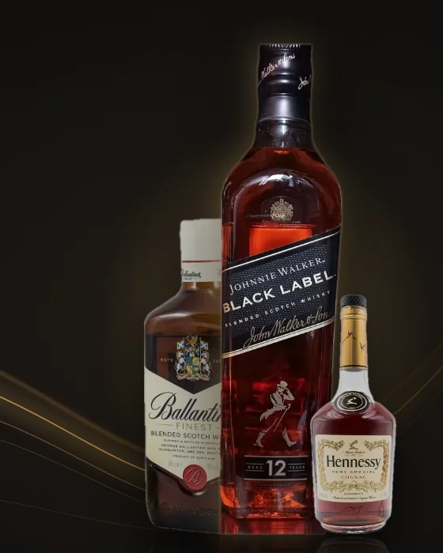
Proefkaart
Vier glazen vandaag
Het eerste glasDe website
Een goede fles begint aan de toonbank
De collectie met zoeken en filteren, advies op maat en de weg naar het Raadhuisplein. Rustige beweging laat het merk voelen.
- Collectie met zoeken, filteren en sorteren
- Advies: vertel wat u lekker vindt
- Afhalen aan het Raadhuisplein of bezorgen in Rozenburg

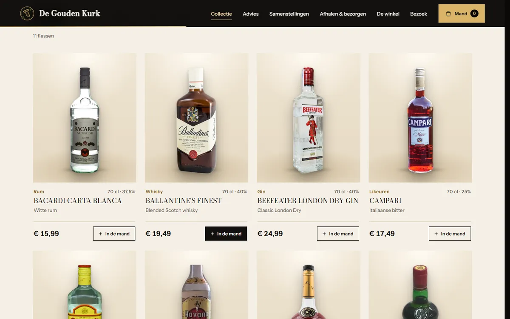
Het tweede glasSocial media
Een maand aan berichten, klaar om te plaatsen
12 posts, 4 carrousels, 12 stories, 6 Facebookposts en 6 reelconcepten in 30 dagen, met bijschriften. Rustig van toon, in dezelfde stijl als de website.
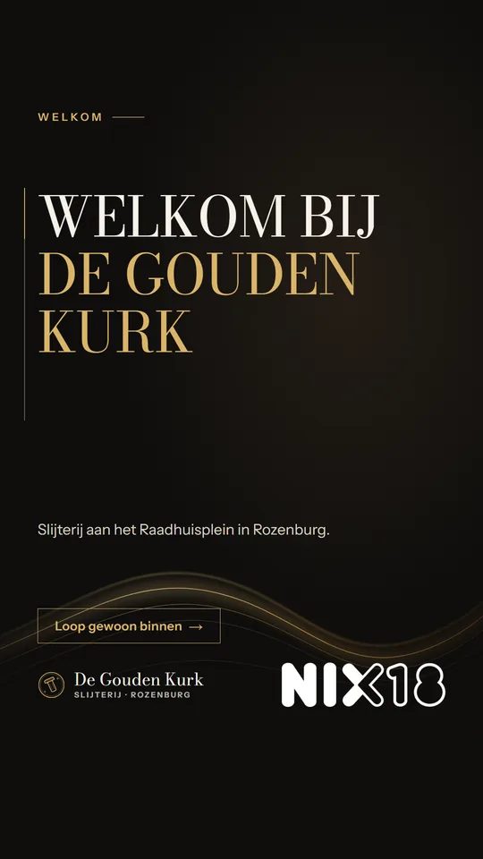
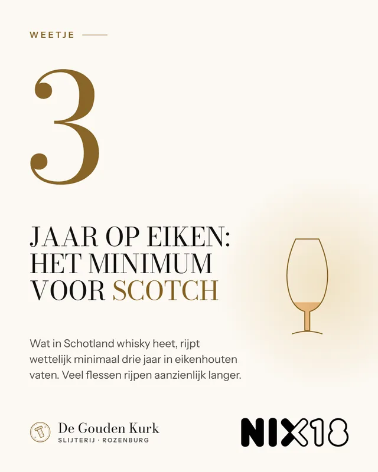
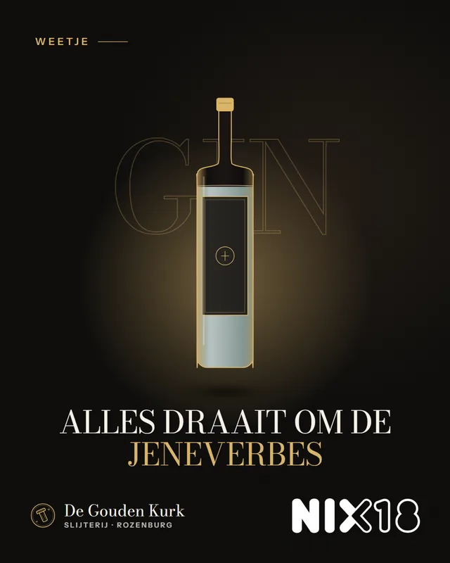
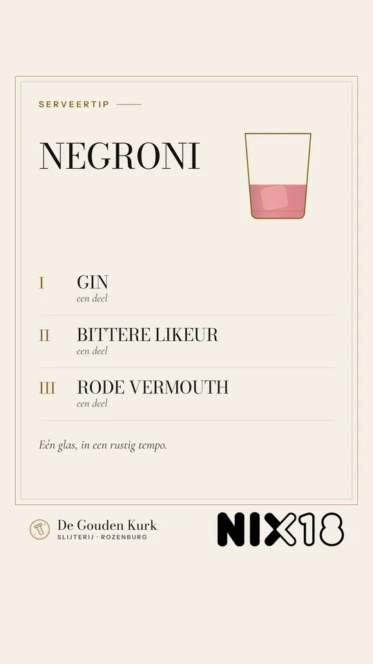
Het derde glasDe app
Smaak ontdekken, cadeau kiezen, eigen collectie
THE TASTE CLUB is een app voor op de telefoon. Geen webshop: wel een manier om te ontdekken wat er in het glas zit.
Demo Open de app op uw telefoon. Hij vraagt eerst of u 18 bent.
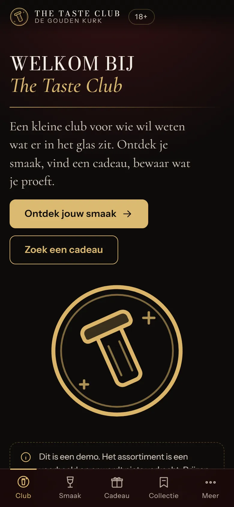
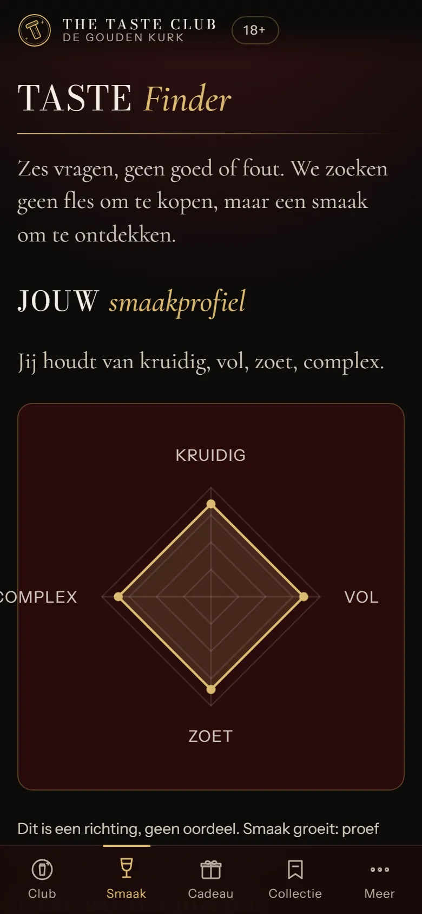
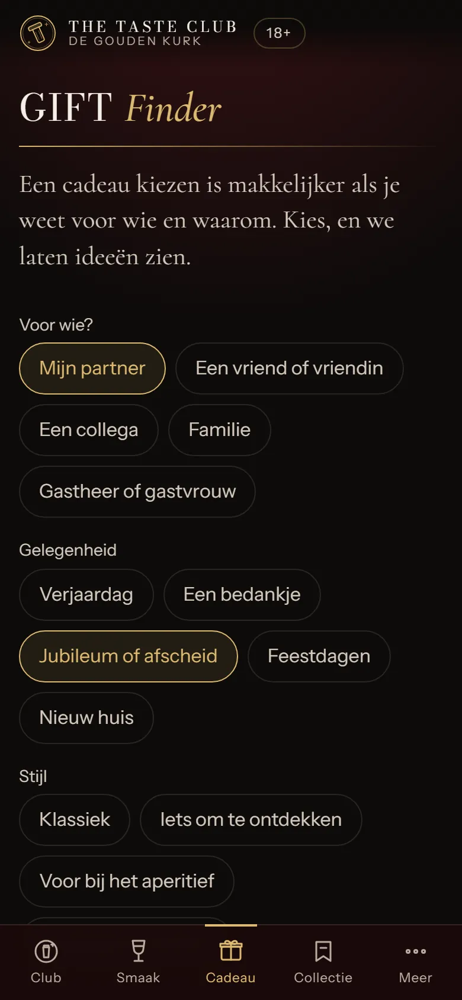
The Taste ClubOntdekken, niet méér drinken
Een kleine club voor wie wil weten wat er in het glas zit
- Zes vragen leiden naar een smaakprofiel en vier passende flessen.
- Favorieten bewaren, proefnotities maken en twee flessen naast elkaar vergelijken.
- De Golden Pick: elke periode één fles met een verhaal.
- Geen verkoop, geen korting, geen punten. Alleen 18+, met NIX18 en "Geniet, maar drink met mate".
Voorbeeld Flessen en smaakprofielen zijn concept tot De Gouden Kurk ze bevestigt.
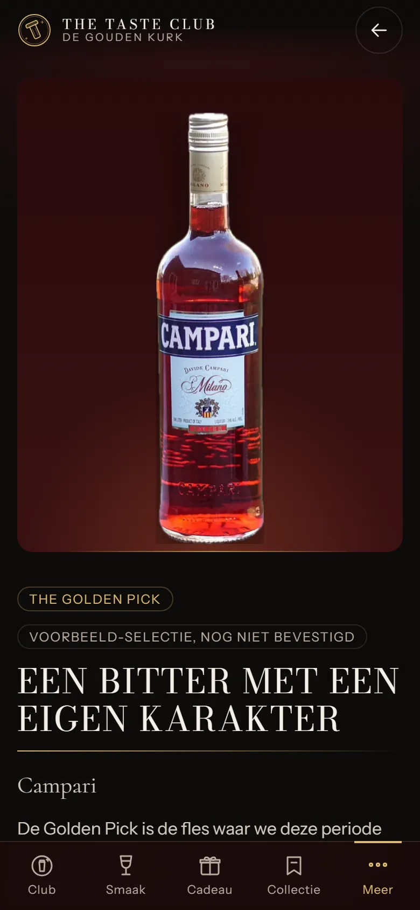
Achter de schermenHet beheer
Flessen en verhalen zelf aanpassen
Een prototype dat laat zien hoe beheren eruit kan zien. Wijzigingen blijven in de browser; exporteren levert ze als bestand aan.
- Producten toevoegen en bewerken, met foto en bronvermelding
- De Golden Pick kiezen en evenementen en verhalen als concept of gepubliceerd
- Echt beheer vraagt een inlog en een server; dat staat uitgewerkt in de documentatie
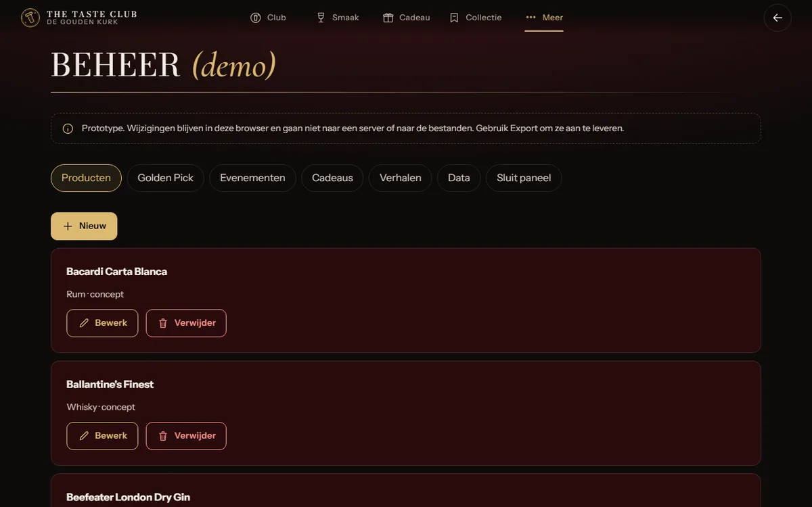
Eén klant, drie ingangen
Elk onderdeel laat de klant naar het volgende gaan.
-
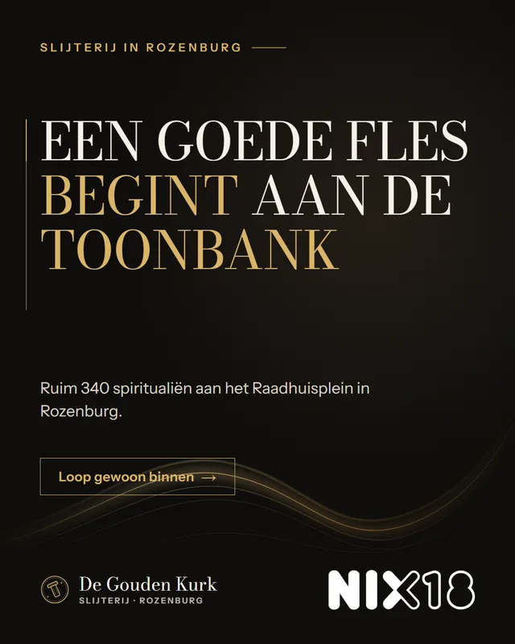
1
Instagram
Een bericht laat zien wie we zijn en waar we staan.
-
2
De website
De collectie en de weg naar het Raadhuisplein.
-
3
De app
Smaak ontdekken en onthouden wat u proeft.
Het laatste glasWat u nog kunt doen
Drie dingen waar u ons bij helpt
-
1
Assortiment en openingstijden
Nu staan er elf voorbeeldflessen, voorbeeldprijzen en geen openingstijden. Zodra u ze bevestigt, tonen we ze.
-
2
Eigen foto's
De flesfoto's zijn kleine uitsneden met een open licentie, met bronvermelding. Foto's van uw flessen en winkel maken het af.
-
3
Privacy en leeftijd
Wie de verantwoordelijke is voor de privacyverklaring, en een jurist die de leeftijdspoort en NIX18 beoordeelt.
Het blijft een concept: er wordt niets besteld of betaald, en alle gegevens zijn voorbeelden.
Het laatste woordZelf proeven
Loop zelf even rond
De website en de app staan open in de browser. Er is niets echt: flessen, prijzen en voorraad zijn voorbeelden.
Wat u hier ziet
- Website
- Zwart-goud concept met voorbeeldassortiment
- Social media
- 30 dagen, klaar om te plaatsen
- App
- THE TASTE CLUB, demo zonder verkoop
- Winkel
- Raadhuisplein 6, Rozenburg
06 44999844
Adres en telefoonnummer zijn van De Gouden Kurk. Al het andere is voorbeeld tot u het bevestigt.
Stuur uw reactie per e-mail